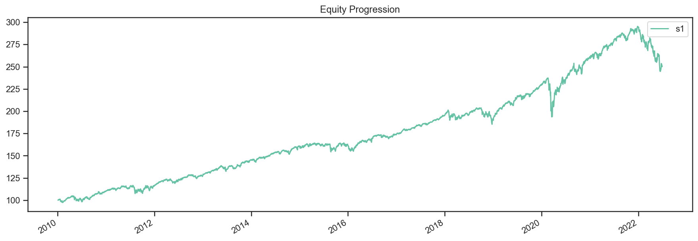
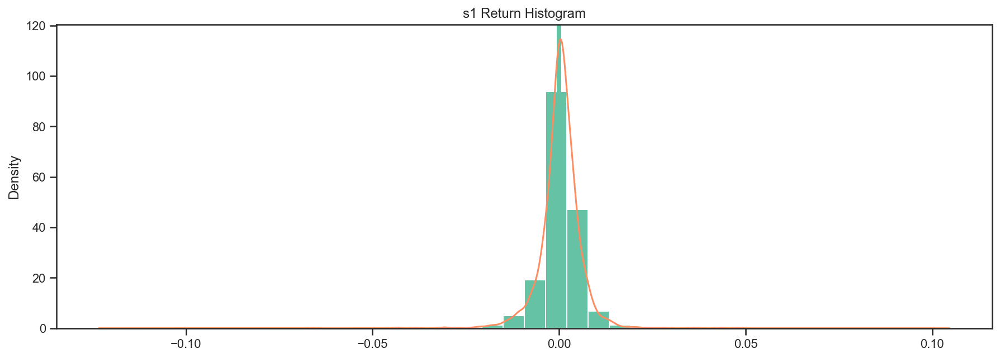
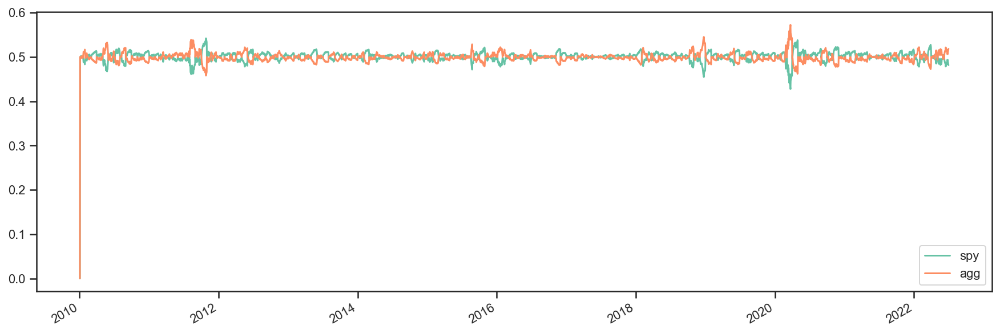
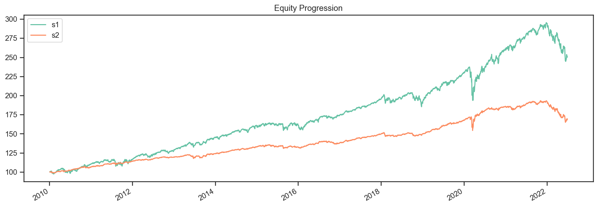

import bt
%matplotlib inline
A Simple Strategy Backtest¶
Let’s create a simple strategy. We will create a monthly rebalanced, long-only strategy where we place equal weights on each asset in our universe of assets.
First, we will download some data. By default, bt.get (alias for ffn.get) downloads the Adjusted Close from Yahoo! Finance. We will download some data starting on January 1, 2010 for the purposes of this demo.
# fetch some data
data = bt.get('spy,agg', start='2010-01-01')
print(data.head())
spy agg
Date
2010-01-04 89.225410 74.942825
2010-01-05 89.461586 75.283791
2010-01-06 89.524574 75.240227
2010-01-07 89.902473 75.153221
2010-01-08 90.201691 75.196724
Once we have our data, we will create our strategy. The Strategy object contains the strategy logic by combining various Algos.
# create the strategy
s = bt.Strategy('s1', [bt.algos.RunMonthly(),
bt.algos.SelectAll(),
bt.algos.WeighEqually(),
bt.algos.Rebalance()])
Finally, we will create a Backtest, which is the logical combination of a strategy with a data set.
Once this is done, we can run the backtest and analyze the results.
# create a backtest and run it
test = bt.Backtest(s, data)
res = bt.run(test)
Now we can analyze the results of our backtest. The Result object is a thin wrapper around ffn.GroupStats that adds some helper methods.
# first let's see an equity curve
res.plot();
{kind=link}

# ok and what about some stats?
res.display()
Stat s1
------------------- ----------
Start 2010-01-03
End 2022-07-01
Risk-free rate 0.00%
Total Return 150.73%
Daily Sharpe 0.90
Daily Sortino 1.35
CAGR 7.64%
Max Drawdown -18.42%
Calmar Ratio 0.41
MTD 0.18%
3m -10.33%
6m -14.84%
YTD -14.84%
1Y -10.15%
3Y (ann.) 5.12%
5Y (ann.) 6.44%
10Y (ann.) 7.36%
Since Incep. (ann.) 7.64%
Daily Sharpe 0.90
Daily Sortino 1.35
Daily Mean (ann.) 7.74%
Daily Vol (ann.) 8.62%
Daily Skew -0.98
Daily Kurt 16.56
Best Day 4.77%
Worst Day -6.63%
Monthly Sharpe 1.06
Monthly Sortino 1.91
Monthly Mean (ann.) 7.81%
Monthly Vol (ann.) 7.36%
Monthly Skew -0.39
Monthly Kurt 1.59
Best Month 7.57%
Worst Month -6.44%
Yearly Sharpe 0.81
Yearly Sortino 1.75
Yearly Mean 7.48%
Yearly Vol 9.17%
Yearly Skew -1.34
Yearly Kurt 2.28
Best Year 19.64%
Worst Year -14.84%
Avg. Drawdown -0.84%
Avg. Drawdown Days 13.23
Avg. Up Month 1.70%
Avg. Down Month -1.80%
Win Year % 83.33%
Win 12m % 93.57%
# ok and how does the return distribution look like?
res.plot_histogram()
{kind=link}

# and just to make sure everything went along as planned, let's plot the security weights over time
res.plot_security_weights()
{kind=link}

Modifying a Strategy¶
Now what if we ran this strategy weekly and also used some risk parity style approach by using weights that are proportional to the inverse of each asset’s volatility? Well, all we have to do is plug in some different algos. See below:
# create our new strategy
s2 = bt.Strategy('s2', [bt.algos.RunWeekly(),
bt.algos.SelectAll(),
bt.algos.WeighInvVol(),
bt.algos.Rebalance()])
# now let's test it with the same data set. We will also compare it with our first backtest.
test2 = bt.Backtest(s2, data)
# we include test here to see the results side-by-side
res2 = bt.run(test, test2)
res2.plot();
{kind=link}

res2.display()
Stat s1 s2
------------------- ---------- ----------
Start 2010-01-03 2010-01-03
End 2022-07-01 2022-07-01
Risk-free rate 0.00% 0.00%
Total Return 150.73% 69.58%
Daily Sharpe 0.90 0.96
Daily Sortino 1.35 1.41
CAGR 7.64% 4.32%
Max Drawdown -18.42% -14.62%
Calmar Ratio 0.41 0.30
MTD 0.18% 0.38%
3m -10.33% -6.88%
6m -14.84% -12.00%
YTD -14.84% -12.00%
1Y -10.15% -10.03%
3Y (ann.) 5.12% 1.84%
5Y (ann.) 6.44% 3.35%
10Y (ann.) 7.36% 3.76%
Since Incep. (ann.) 7.64% 4.32%
Daily Sharpe 0.90 0.96
Daily Sortino 1.35 1.41
Daily Mean (ann.) 7.74% 4.33%
Daily Vol (ann.) 8.62% 4.50%
Daily Skew -0.98 -2.21
Daily Kurt 16.56 46.12
Best Day 4.77% 2.84%
Worst Day -6.63% -4.66%
Monthly Sharpe 1.06 1.13
Monthly Sortino 1.91 1.87
Monthly Mean (ann.) 7.81% 4.40%
Monthly Vol (ann.) 7.36% 3.89%
Monthly Skew -0.39 -1.06
Monthly Kurt 1.59 3.92
Best Month 7.57% 4.05%
Worst Month -6.44% -5.04%
Yearly Sharpe 0.81 0.65
Yearly Sortino 1.75 1.19
Yearly Mean 7.48% 4.13%
Yearly Vol 9.17% 6.31%
Yearly Skew -1.34 -1.48
Yearly Kurt 2.28 3.37
Best Year 19.64% 11.71%
Worst Year -14.84% -12.00%
Avg. Drawdown -0.84% -0.48%
Avg. Drawdown Days 13.23 13.68
Avg. Up Month 1.70% 0.90%
Avg. Down Month -1.80% -0.93%
Win Year % 83.33% 83.33%
Win 12m % 93.57% 91.43%